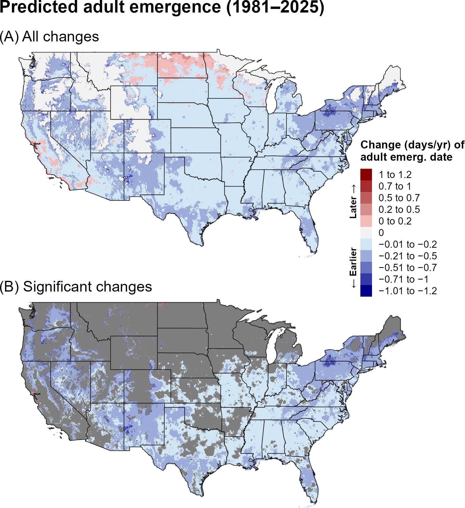
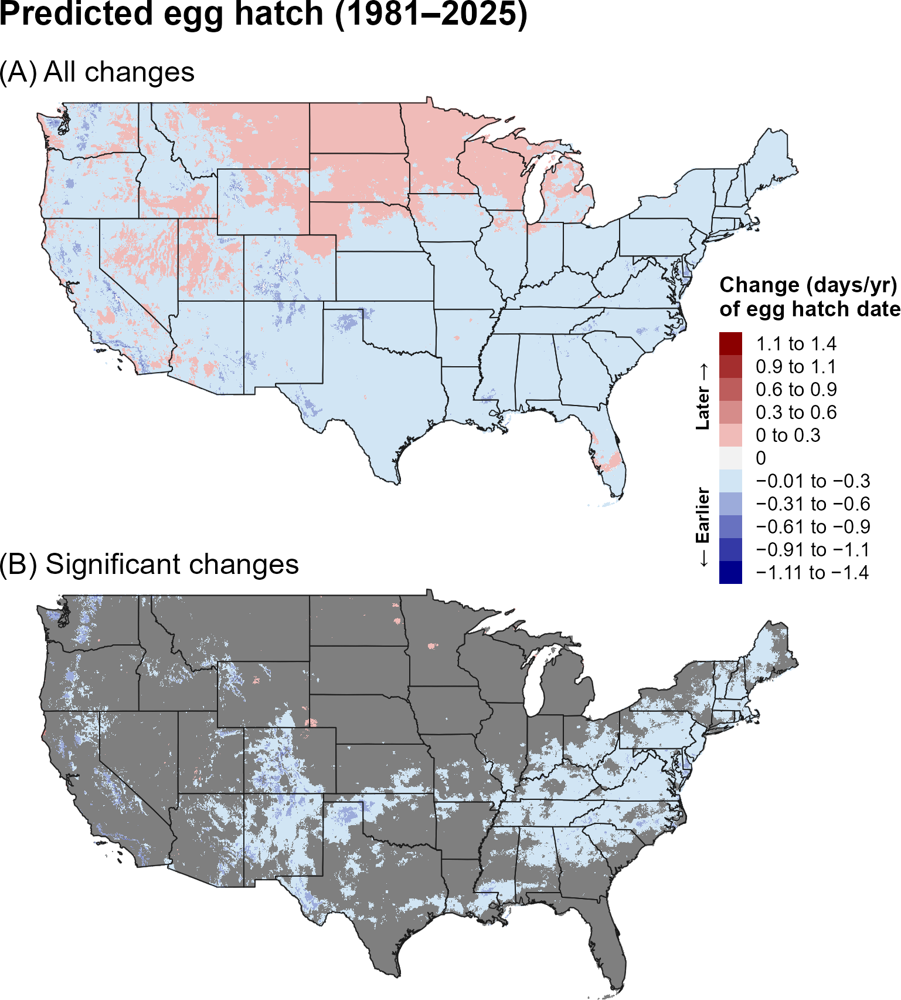
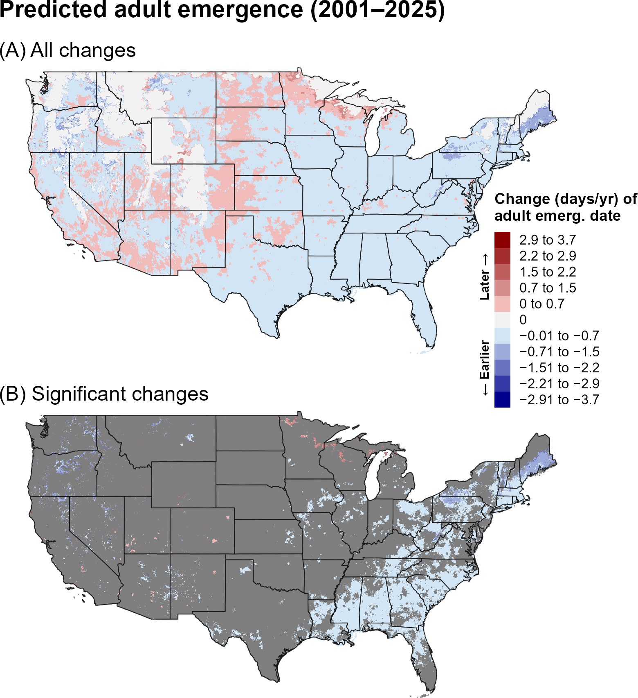
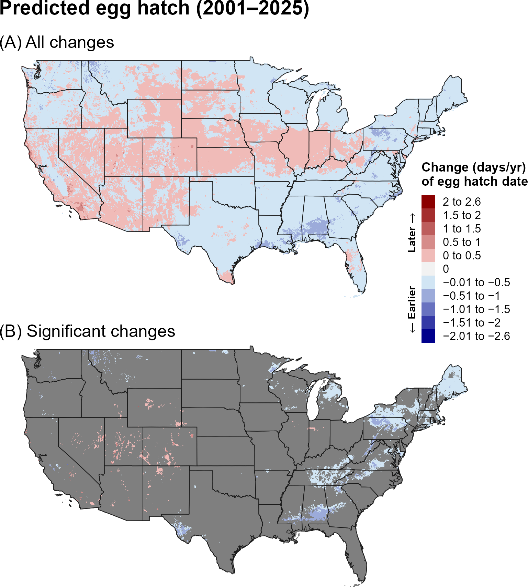
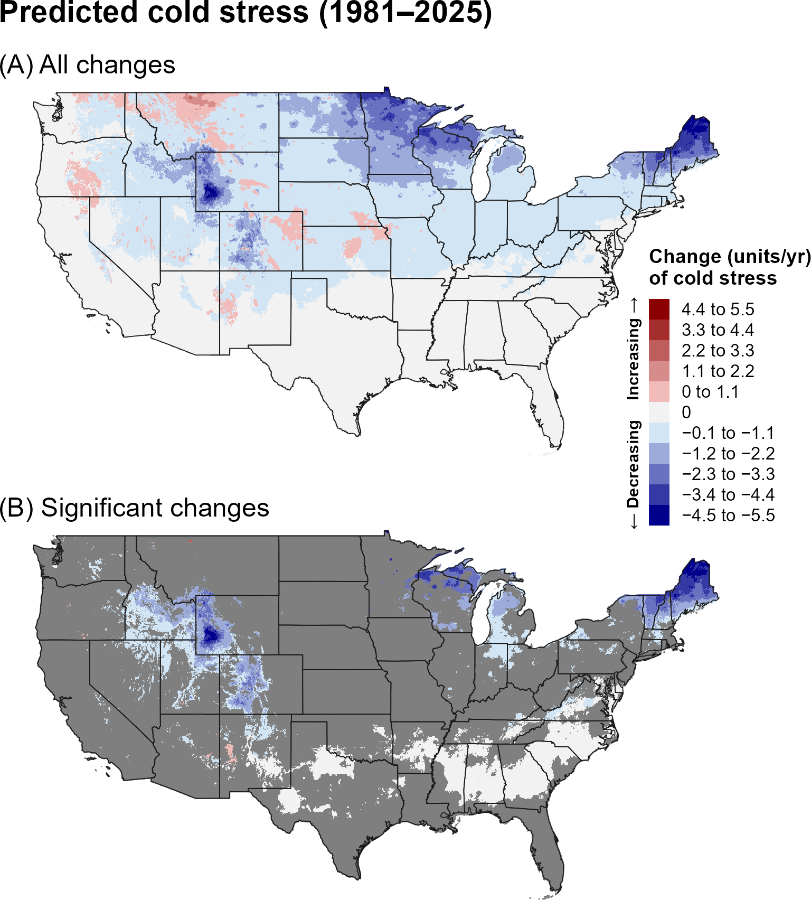
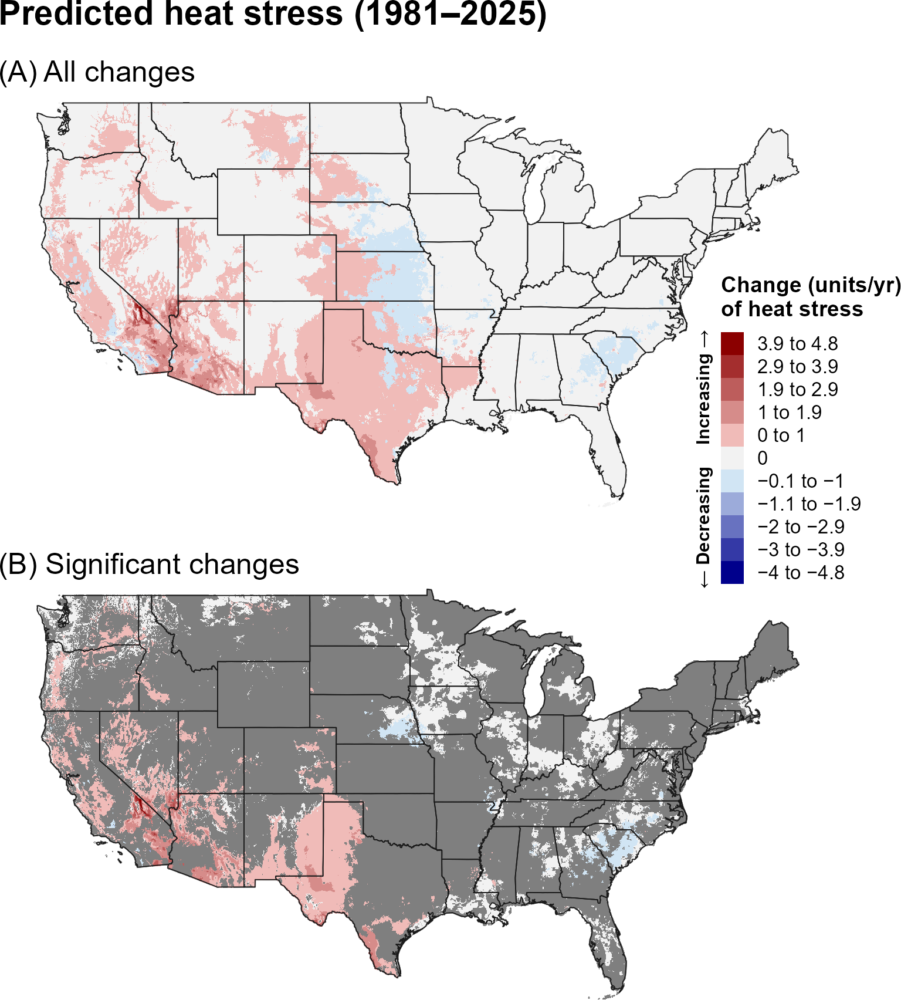
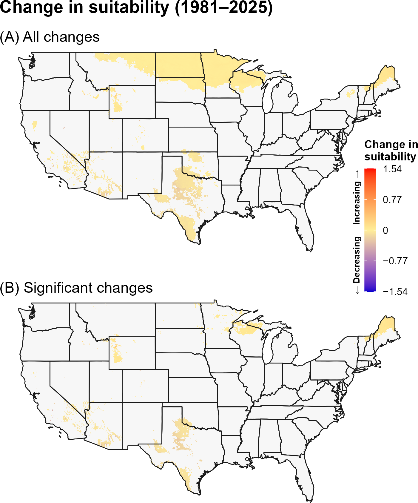
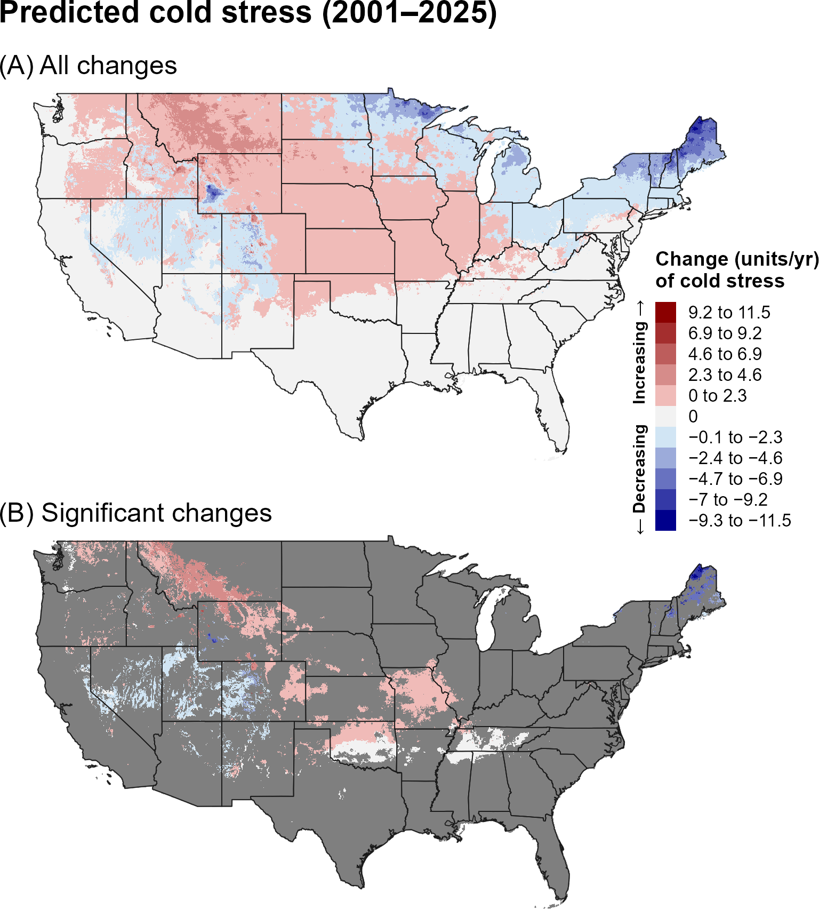
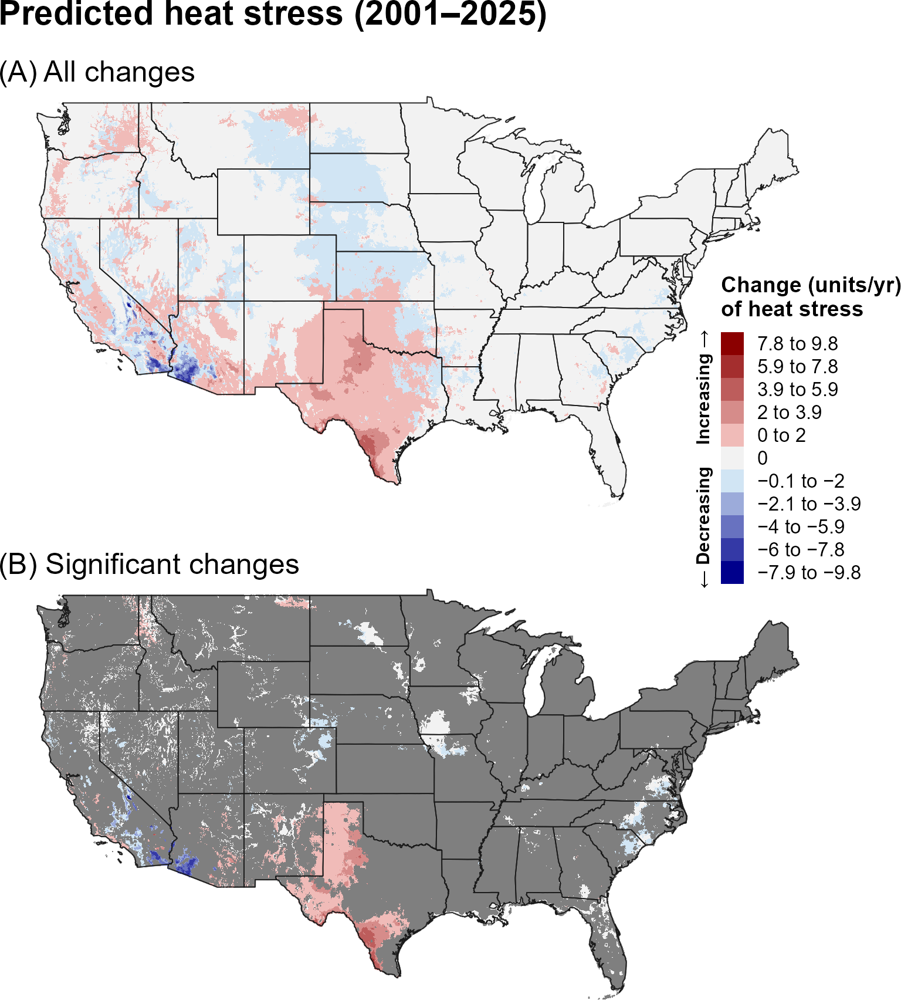
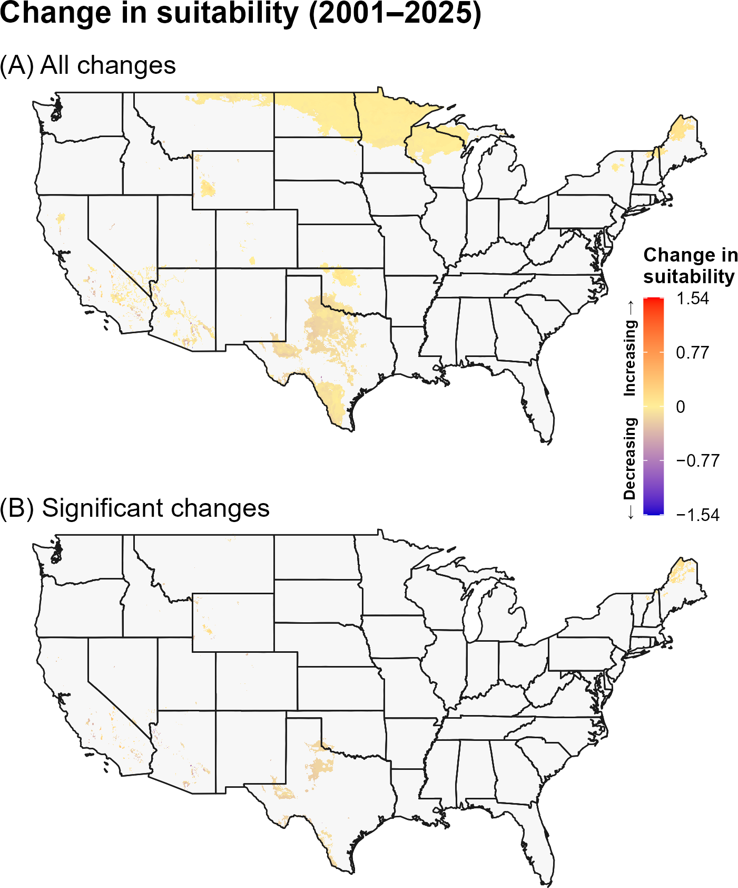

13A. Introduction
The spotted lanternfly (SLF), Lycorma delicatula (White) (Hemiptera: Fulgoridae), is a highly polyphagous planthopper that feeds on a broad range of agricultural and non-agricultural plants, including grapevines, fruit and nut trees, and ornamental species (Chu 1930, Barringer and Ciafré 2020, EPPO 2025). Adults cause direct damage by feeding on plant sap, while the accumulation of honeydew promotes the growth of sooty mold, which can inhibit photosynthesis and attract additional pests (Dara et al. 2015, Urban and Leach 2023). Native to China, SLF was first detected in the United States in 2014 in Pennsylvania and has since spread to at least 20 eastern states (Urban and Leach 2023, NYSIPM 2025). The widespread presence of its preferred host, tree-of-heaven [Ailanthus altissima (Mill.) Swingle], has facilitated its rapid expansion (Barringer and Ciafré 2020). In suburban and urban environments, SLF can become a significant nuisance, with large aggregations of adults often swarming on trees (Urban and Leach 2023). The species has already caused substantial economic impacts, including estimated annual losses of $8.8 million to New York’s grape industry alone (Pinto et al. 2025).
Modeling studies indicate that SLF has not yet filled its fundamental niche in the contiguous United States (CONUS) under current weather patterns, with suitable conditions extending across much of the Pacific Coast and eastern United States (Jones et al. 2022, Wakie et al. 2019, Barker et al. 2025). The coldest regions of the CONUS, particularly portions of the Midwest and Northeast, may be less suitable for establishment (Wakie et al. 2019, Barker et al. 2025), although urban heat island effects could facilitate establishment in colder areas beyond the currently predicted range (Owen et al. 2024). SLF phenology may also shift in response to changing weather patterns. Analysis of citizen science observations from 2014 to 2022 found earlier adult emergence and later winter die-off as SLF expanded its range in the eastern United States (Owen et al. 2024). However, the effects of temperature, photoperiod, and other environmental factors on egg diapause and developmental rates remain incompletely understood, limiting predictions of how SLF may respond to changing weather patterns (Keena and Nielsen 2021, Calvin et al. 2023). Diapause may buffer populations against weather variability by enhancing overwintering egg survival and accelerating development and fecundity during summer and fall heat waves (Lewkiewicz et al. 2024). SLF is currently considered univoltine, including in warmer regions of China, and whether it can complete multiple generations annually in warmer areas of the United States remains uncertain (Keena and Nielsen 2021, Calvin et al. 2023).
A model for spotted lanternfly developed for the Degree-Day, establishment Risk, and Phenological event mapping system (DDRP) is operationalized to produce near real-time forecasts for the CONUS at https://uspest.org/DDRP. The phenology model applies a lower developmental threshold of 10 °C and upper threshold of 35 °C for all life stages (egg, larva, pupa, and adult) and assumes the egg is the overwintering stage. The climatic suitability model applies a lower cold stress threshold and upper heat stress threshold of −16 °C and 37 °C, respectively. The full set of model parameters for spotted lanternfly, including degree-day requirements for individual life stages and climate stress limits, are presented in ?@tbl-slf-parameters. Details on model parameterization are available at USPest.org (Barker et al. 2025).
13B. Results
i. Phenology
Entire period: 1981–2025
Over 1981–2025, predicted first egg hatch and adult emergence showed mixed spatial trends, with later events occurring across portions of the northern and central United States and earlier events in scattered southern and western areas (Figure 1, Figure 2). Significant changes were concentrated in the eastern and central United States and in localized western areas.

Recent period: 2001–2025
During 2001–2025, later predicted egg hatch and adult emergence were more apparent across portions of the northern and western United States, while earlier events occurred in scattered central and eastern areas (Figure 3, Figure 4). Significant changes were relatively limited in spatial extent.


ii. Climatic suitability
Entire period: 1981–2025
Predicted cold stress decreased across much of the northern United States over 1981–2025, whereas heat stress increased in the western and southern United States (Figure 5, Figure 6). Climatic-suitability changes were limited, with significant increases occurring mainly in localized northern areas (Figure 7).



Recent period: 2001–2025
During 2001–2025, increases in cold stress became more evident across portions of the northern and central interior, while heat stress continued to increase in the Southwest and southern Great Plains (Figure 8, Figure 9). Significant suitability changes remained highly localized (Figure 10).



13C. Discussion
The SLF maps show a mixed phenological response, with the direction of change varying geographically and between the two periods. The absence of a single dominant spatial direction suggests that the timing of SLF development may respond differently to regional climate trends. Because the species is already capable of substantial spread in North America, localized changes in predicted phenology may be particularly relevant for surveillance timing in newly suitable areas.
Although cold and heat stress changed across broad areas, relatively little of that variation translated into significant changes in predicted climatic suitability. The long-term reduction in cold stress across northern regions could reduce one climatic constraint on establishment, but recent increases in cold stress in portions of the northern interior may have moderated this trend.
The stronger and more spatially extensive trends in predicted phenology and climate stress over the full 44-year period may reflect both the larger sample size, which can reduce noise and improve detection of directional patterns, and differences in the underlying climate trends between the two time periods. In particular, the recent 24-year period may capture climate variability or regional trends that differ from those observed over the longer 44-year period. Thus, differences between the two periods should be interpreted as reflecting both long-term climate trends and shorter-term regional variability.
13D. References
Barker, B. S., J. Beyer, and L. Coop. 2025. Real-time integrative mapping of the phenology and climatic suitability for the spotted lanternfly, Lycorma delicatula. Insects 16:790.
Barringer, L., and C. M. Ciafré. 2020. Worldwide feeding host plants of spotted lanternfly, with significant additions from North America. Environmental Entomology 49:999–1011.
Calvin, D. D., J. Rost, J. Keller, S. Crawford, B. Walsh, M. Bosold, and J. Urban. 2023. Seasonal activity of spotted lanternfly (Hemiptera: Fulgoridae), in Southeast Pennsylvania. Environmental Entomology 52:1108–1125.
Chu, H. J. 1930. Notes on the life-history of Lycorma delicatula White in Nanking. Peking Natural History Bulletin 5:33–35.
Dara, S., L. Barringer, and S. Arthurs. 2015. Lycorma delicatula (Hemiptera: Fulgoridae): A new invasive pest in the United States. Journal of Integrated Pest Management 6:20.
EPPO. 2025. Lycorma delicatula. EPPO datasheets on pests recommended for regulation. Online at: https://gd.eppo.int (accessed 29 May 2025).
Jones, C., M. M. Skrip, B. J. Seliger, S. Jones, T. Wakie, Y. Takeuchi, V. Petras, A. Petrasova, and R. K. Meentemeyer. 2022. Spotted lanternfly predicted to establish in California by 2033 without preventative management. Communications Biology 5:558.
Keena, M. A., and A. L. Nielsen. 2021. Comparison of the hatch of newly laid Lycorma delicatula (Hemiptera: Fulgoridae) eggs from the United States after exposure to different temperatures and durations of low temperature. Environmental Entomology 50:410–417.
Lewkiewicz, S. M., B. Seibold, and M. R. Helmus. 2024. Quantifying population resistance to climatic variability: The invasive spotted lanternfly grape pest is buffered against temperature extremes in California. Ecological Modelling 497:110841.
New York State Integrated Pest Management (NYSIPM): Spotted lanternfly known distribution (updated April 24, 2025). Available online: https://cals.cornell.edu/new-york-state-integrated-pest-management/outreach-education/whats-bugging-you/spotted-lanternfly/spotted-lanternfly-reported-distribution-map (accessed on 1 May 2025).
Owen HL, Meng F, Winchell KM. 2024. Urbanization and environmental variation drive phenological changes in the spotted lanternfly, Lycorma delicatula (Hemiptera: Fulgoridae). Biological Journal of the Linnean Society 143:blae099.
Park, M. 2015. Overwintering ecology and population genetics of Lycorma delicatula (Hemiptera: Fulgoridae) in Korea. Ph.D. thesis. Seoul, South Korea: Seoul National University.
Pinto, A. F., B. C. Eshenaur, F. E. Acevedo, A. A. Calixto, M. Centinari, and M. I. Gómez. 2025. Assessing the potential economic impacts of spotted lanternfly (Hemiptera: Fulgoridae) infestations on grape production in New York State. Journal of Integrated Pest Management 16:2.
Urban, J. M., and H. Leach. 2023. Biology and management of the spotted lanternfly, Lycorma delicatula (Hemiptera: Fulgoridae), in the United States. Annual Review of Entomology:157–167.
Wakie, T. T., L. G. Neven, W. L. Yee, and Z. Lu. 2019. The establishment risk of Lycorma delicatula (Hemiptera: Fulgoridae) in the United States and globally. Journal of Economic Entomology 113:306–314.